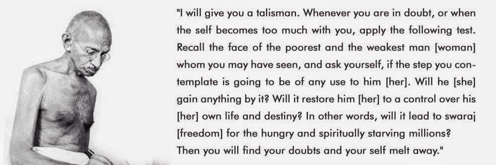

Gandhi has a different place in the world not as a leader but as a mentor, guide and spirtual guru all around the world.
I do not believe that Gandhi's major achievement was getting India independence, sooner or later, someone else through some other means would have gotten us the same. What I think was his contribution was showing to us that unyielding quest for self realisation invariably helps the society you live in.
And this is the reason we call him the Mahatama - the supreme soul, not something like the supreme leader, statesman or even the colloquial founding father.
To understand Gandhi, I revisited one of his Talisman's, the mantra that he wrote few months before his death and is one of his deepest social thoughts. It goes something like this:
"I will give you a talisman. Whenever you are in doubt, or when the self becomes too much with you, apply the following test. Recall the face of the poorest and weakest man[woman] whom you may have seen, and ask yourself, if the step you contemplate is going to be any use to him[her]. Will he[she] gain anything by it? Will it restore him[her] to a control over his own life and destiny? In other words, will it lead to Swaraj[freedom] for the hungry and the spirtually starving millions? Then you will find your doubts and your self melt away."
I do a cushy corporate job and earn the lifestyle and money that would put me not in the top percentile of this country but for anyone in the world. And to say that I don't find comfort in it would be a lie. I buy good clothes, can take care of my parents, eat whatever I want, spend as much as I want and still have something left to save.
But even after all this, there's a certain sense of discomfort in knowing that none of my actions serve the poorest face I know. One possible way is to leave this life of comfort and choose a life of service like Gandhi did. But will that really help?
On the face of it, this looks like a brilliant idea – to work on relevant problem and help someone come out of misery. It's only when I digged deep I found the gaps in this thought. There are some questions I would need an answer for before I could tell myself if this is what is actually required.
Upon introspection, I found that most of us don't have the skillsets required to serve the needy. To think of us as someone who can help the poor just because we are a little better off is hubris at its best. Yes, we can help with money, but that can be done with the corporate job. In fact, that can be done the best through the corporate job since you've a constant inflow of money.
But skills are always what follows after will. So if there's a will, we can always develop the skills required for the task. In that case, the second question comes to the picture. Does it feel like a sacrifice? If it feels like a sacrifice, that means it won't be sustainable. I don't mean to say that people don't sacrifice for other people. They do sacrifice and all the time.
I think sacrifice is always associated with self joy and pride to some extent. When a sergeant fights on the border, he feels immense joy and pride to serve his nation and even die for it. At this moment the feeling of joy and pride in the work, overpowers the feeling of sacrifice and immolation.
So the question is would we get that same feeling over a sustained period of time after trading off the comfort our plush jobs? I don't know and this brings me to the third question and the Gandhian model for this conundrum.
What Gandhiji essentially conveys here is not to help the poor just financially, but also to fulfil his spirtual starvation. We can only give food to someone if we have it with us. We can only give money to someone if we have with it us. So how can we give someone hope when we don't have any?
This is where the Gandhian model for the realization of self comes into play. All the things we do in life – we that good job, starting a business, or vying for the ideal life partner – we do on the outside to feed our inner selves, to feel secure, rich, or settled. What Mahatma Gandhi proposes is to work on the inside to feed the outside. Meditate, fast, and observe silence to find the joy deep within, and then spread it to the needy to nourish their spiritual starvation.
This growth of the self will then help us financially, spirtually, and also make us want to improve upon the skills that are truly required. Probably through this the Mahatama realised that this is all one Atman, one brahman and when the distinction of the self with others ceases to exist, there is no difference between service to the self and the service to others.
I like to believe that Gandhi's talisman is the perfect north star to decide my place in the world. I see it as removing the distinction with the self and the others. Like all sustained habits, it requires a complete identity shift and like all identity shifts it can be achieved as much from changing the identity as can be from reverse engineering the actions. A change in identity would occur through writing, deliberating, meditating and a change in actions would occur through charity, service, and adventure.
What's your north star to live this life?
